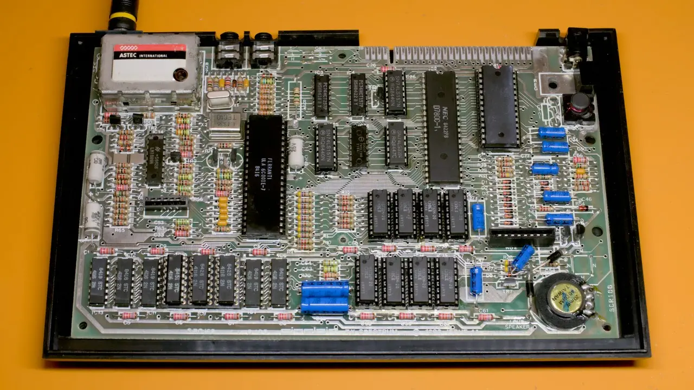

Sinclair ZX Spectrum
Status: Refurbished and working
Configuration
- Built: 1984
- Mainboard: Issue 4A
- CPU: Z80A (date code 8422)
- ULA: 6C001E-7 (date code 8416, probably made in Phillipines)
- RAM: 48KB (OKI M3732H-20)
- ROM: 16KB (NEC, socketed)
Trivia
- Was sold as untested. Came with a German introduction manual.
Restauration Works
- Composite Mod
- ULA was not properly seated.
- IC26 pin 8 was bent and not properly put into the socket, fixed.
- TV signal was almost black. -5V and 12V was missing. Checked coil, but it was OK. Replaced TR4, TR5 and D19. 12V rail had 7V. TR4 and IC8 were getting very hot.
- Diagnostics identified IC9 and IC10 to be defective, too. They were replaced. 12V was fine after that. -5V rail was -4V though.
- Machine has a modified DC/DC converter in Sinclairs final revision. However C47 was missing, soldered in a 1µF cap. -5V rail gave -4.2V after that, which is closely within tolerance.
- Diagnostics showed that the AMI ROM was defective. Unsoldered it and soldered in a socket. Found an old NEC ROM in my spare part box, which worked fine.
- Recapped the machine. 7805 and heatsink was replaced with a Traco Power DC/DC converter.
- Case cleaned. Faceplate is clipped and was removed for cleaning.
- Brittle membrane replaced with a replica.
- Four case screws and the PCB screw were missing and have been replaced.
Known Issues
- Minor faceplate damage. I decided to keep it like that, to show that the machine has a history and was once bringing joy to its owner.
History
- 2023-08-13:
- Replaced two more defective lower RAMs.
- Replaced a defective ROM.
- Cleaned the case and keyboard.
- New keyboard membrane.
- 2023-08-12:
- Attempt to repair the DC/DC converter.
- Recapped the machine.
- Replaced a lower RAM that got very hot.
- 2023-03-05: Composite mod, first quick check
- 2023-01-08: Date of purchase